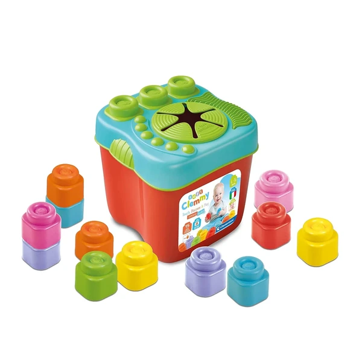

👶 6-12 meses
Cubo sensorial Clemmy 15 bloques Clementoni
Un cubo con 15 bloques blandos de distintas formas y colores, pensado para apilar y construir desde los 6 meses. Ayuda a trabajar la destreza manual y la percepción táctil.
⭐
¿Por qué nos gusta?
- ✔15 bloques de formas y colores variados.
- ✔Material blando, seguro para las primeras manos.
- ✔El cubo sirve también para guardarlos.
💬
Lo que más destacan las familias
Lo que más suele gustar es lo fácil que resulta para el bebé coger y soltar las piezas por su cuenta, sin frustrarse. El propio cubo también gusta como forma sencilla de guardar todo al terminar de jugar.